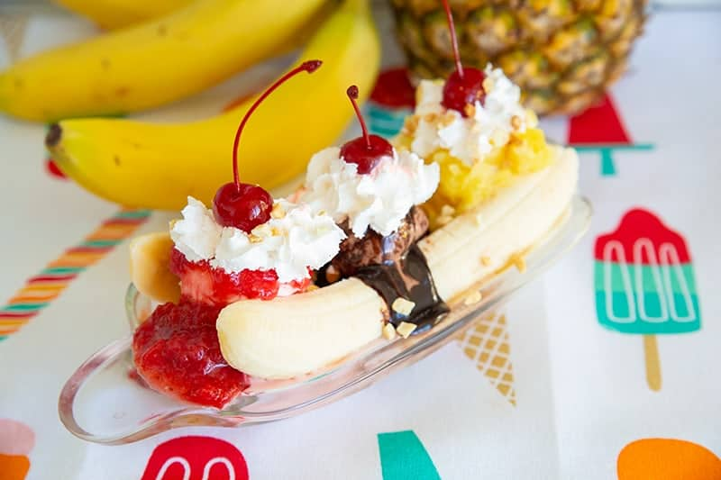

Banana split recipe

Description
In the next few steps, we will describe the making method of the WORLDS BEST Banana split recipe!
Ingredients
- Chocolate ice cream topped with chocolate syrup
- Vanilla ice cream topped with crushed sweetened pineapple
- Strawberry ice cream topped with strawberry compote or strawberry sauce
- Whipped cream
- 1 Banana
- Maraschino cherries
- Peanuts or Walnuts
How to Make a Banana Split
It is really important to have your ingredients together and ready to go when making a banana split. I know this because I had to move like lightning to put this together and then take photos before it melted! To build your banana splits have everything ready to go on your counter and :
- Peel then slice a banana in half lengthwise. You don't want to do this too far ahead of time or they will brown.
- Place one piece of the banana on each side of the banana boat dish.
- Place a scoop of vanilla, chocolate and then strawberry ice cream between the banana pieces. Alternatively you can place the ice cream right on top of the banana slices, the choice is up to you.
- Place the crushed pineapple on top of the vanilla ice cream.
- Place the strawberry syrup or strawberry compote on top of the strawberry ice cream.
- Place chocolate syrup on top of the chocolate ice cream.
- Top each ice cream scoop with whipped cream.
- Place three maraschino cherries on top, one in each whipped cream pile.
- Sprinkle with peanuts or walnuts.
- Serve.